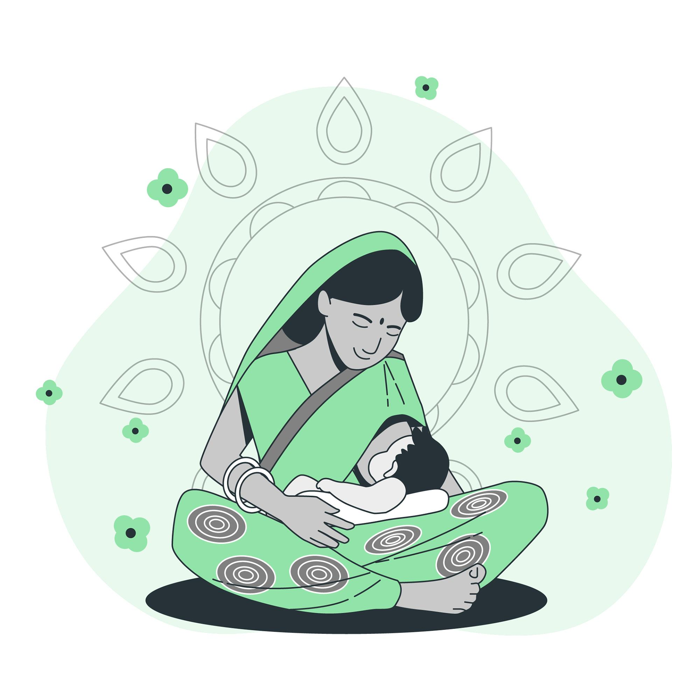
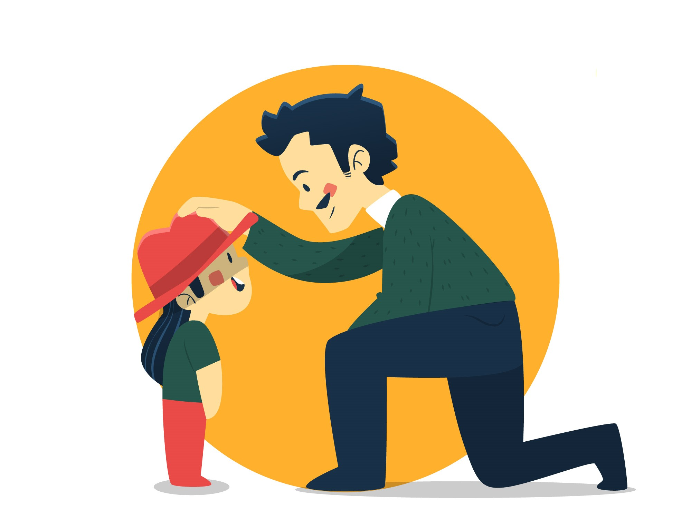
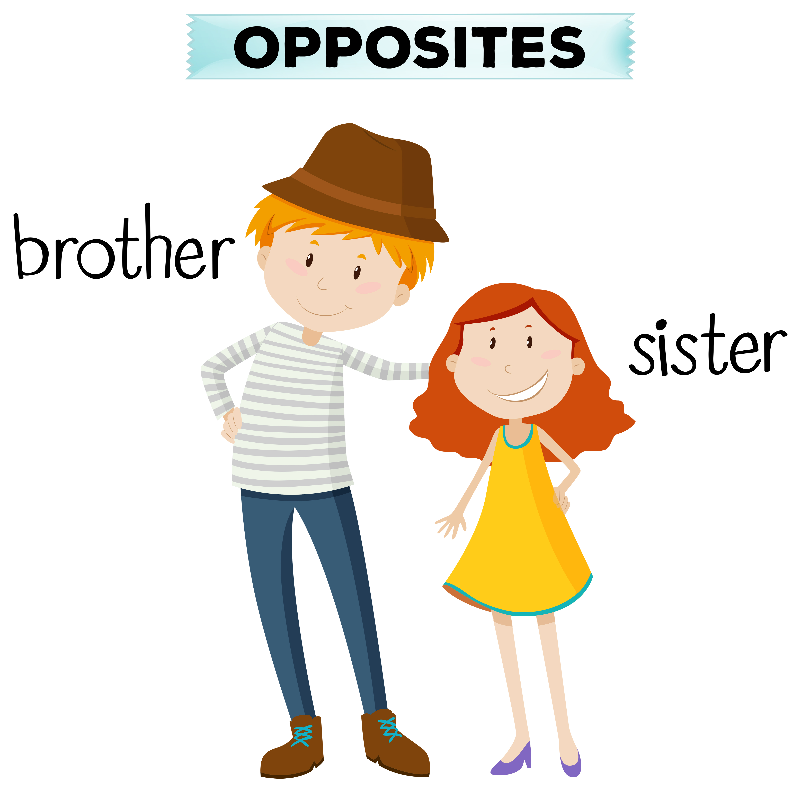
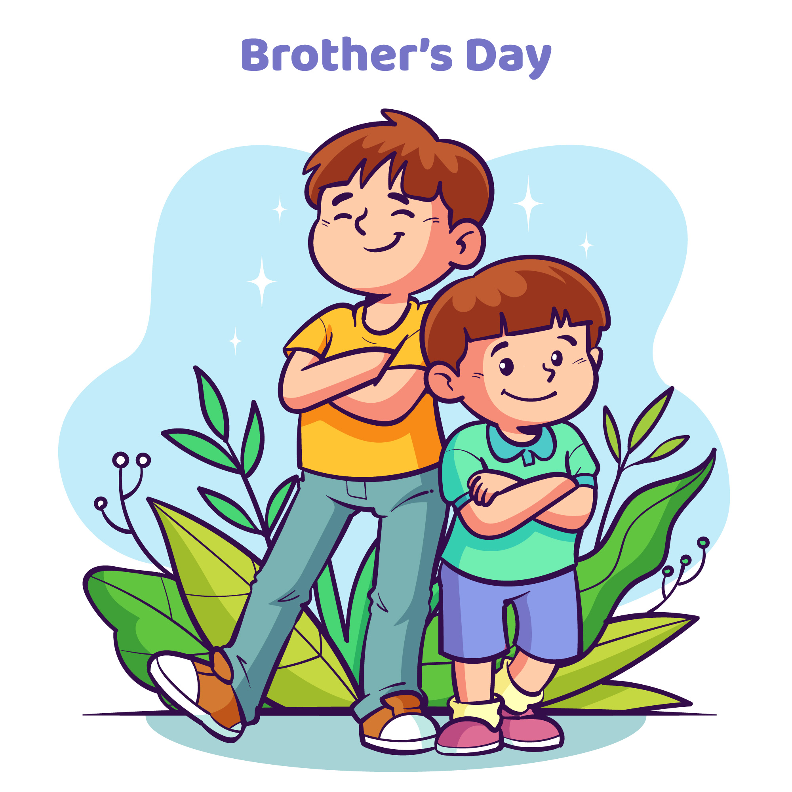

Today I am Making this project for my source of motivation ... My Family
- Like mostly peoples in India I am also from a middle class family... my life is also full of struggle and in this struggle my family also supported me although their life is also full of struggle but after all of this they never stop supporting me.
They always motivate me about my life my failures and for my achivements as well. - So, I will tell u about my family and their support in my life and in my achivements.
- My Mom:

My mom 👩‍🦰.... my mom's life is also full of struggle but all of this she always wakes me up in the morning with a pleasent smile 😊.
she cooks a lot of good dishes for me ... and seriously i love food cooked by my mom rather than restaurant food 😅. My mom is tall and fair women with pink cheeks ğŸ¤. She always treats me well and sometimes she also give me some money 🤫for my monthly expenses. I also have an another mother 👩‍🦰 ... she is my mother's sister and yes she also treats me like his own child and sometimes she become mad 😡 at me but it is true you become angry from that person whom you love. I love her cookedJeera Rice
❤️ - My Dad:

About my dad .... he was my Superman 🦸 my Spiderman 🕸️ and specially my Hulk 💪. He always try to save me from my problems and other outher distractions.But I lost my father in July 2020. But I have my Uncle he is just like my another father and same he is also my Superman 🦸 my Spiderman 🕸️ and yes my Hulk 💪. He always saves me from my problems .. my distractions and always gives me the rigt advice ... he just want to see me as a successful person who walked on his footmarks and finally become successful. - My Sister:

My sister ..... the most dramatic one 😂 but lovely as well she is the one who worked alot with me and fights with me as well 😒 and the one who also cry first 🤠she is also on the way to become a good chef as well .... But she is the one who supports me in my ideas ... and she is the best one ❤️.I never complimented her but my sister you looks very beautiful .... ❤️.
I think I am very good in this joke 😂. - My Little Brother:

My little brother 🥰 who acts as the older one. But the one who loves me more than the others in the family. Although he is smaller than me I don't know how is growing taller than me 😒 but ... I loves it when he compares his height with me and sayमैं तुझ से लम्बा हो गया क्या ?
😒❤️. He is my precious gem and yes I also love him more than the anyone .He always asks me about the things that he should do something or not and I love to guide him.He is the one in which I can see my days when I was younger ....Love you chote ❤️